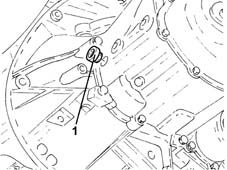
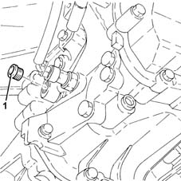
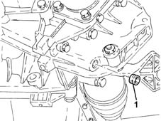
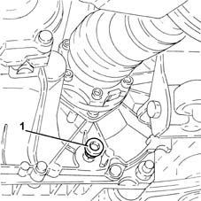

0010T40 change manual gearbox oil
- Path
- Procedures > 00 MAINTENANCE > 0010 NEW UNITS AND PLANNED MAINTENANCE'. > 0010T vehicle oil and fluids > 0010T40 change manual gearbox oil
- Kind
- repair procedure (removal / refitting; the operation number is the code)
- Applies to
- all engines; all production periods
- Interactive page
- https://sloeber94.github.io/elrnDB-lYpsln/en/#/2428826
Applies to: engines: 1.2 8v, 1.2 16v, 1.4 16v; all production periods
Place the car on a lift.
1. Undo the gearbox casing filler plug.

Applies to: engines: 1.3 JTD; all production periods
Place the car on a lift.
Proceed with removal .
1. Undo the gearbox casing filler plug.

Applies to: engines: 1.2 8v, 1.2 16v, 1.4 16v; all production periods
1. Undo the gearbox casing drain plug and collect the oil in a suitable container.

Applies to: engines: 1.3 JTD; all production periods
1. Undo the gearbox casing drain plug and collect the oil in a suitable container.

Applies to: engines: 1.2 8v, 1.2 16v, 1.4 16v; all production periods
Clean the drain plug, refit and tighten to the recommended torque.
 | Fastening | Component | Ø | Value (daNm) |
|---|---|---|---|---|
- | Drain plug | GEAR CASING PADS | M16 | (Differential side) 1.6 ÷ 2.0 |
Refill the gearbox with the specified oil through the filler hole.
 | Type | Component | Name | Qty. |
|---|---|---|---|---|
- | Oli [l] | MANUAL GEARBOX | TUTELA CAR ZC 75 SYNTH | - |
Check that the oil level reaches the bottom of the filler hole.
Clean the drain plug, refit and tighten to the recommended torque.
| Fastening | Component | Ø | Value (daNm) |
|---|---|---|---|---|
- | Filler plug | GEAR CASING PADS | M22 | (Differential side) 2.3 ÷ 2.8 |
Remove the car from the ramps.
Applies to: engines: 1.3 JTD; all production periods
Clean the drain plug, refit and tighten to the recommended torque.
| Fastening | Component | Ø | Value (daNm) |
|---|---|---|---|---|
- | Drain plug | GEAR CASING PADS | M22 | (Differential side) 4.6 |
Refill the gearbox with the specified oil through the filler hole.
| Type | Component | Name | Qty. |
|---|---|---|---|---|
- | Oli [l] | MANUAL GEARBOX | TUTELA CAR ZC 75 Synth | 1.98 |
Check that the oil level reaches the bottom of the filler hole.
Clean the drain plug, refit and tighten to the recommended torque.
| Fastening | Component | Ø | Value (daNm) |
|---|---|---|---|---|
- | Filler plug | GEAR CASING PADS | M22 | (Differential side) 2.0 ÷ 3.0 |
Proceed with refitting .
Remove the car from the ramps.
Topics that link to this page (10)
- 1004D10 power unit (manual gearbox), removed, remove and re-build
- 1020D38 flywheel side oil seal - replace
- 1024B10 engine flywheel - r + r for versions with manual gearbox
- 1810A20 clutch - r + r
- 1820A24 thrust bearing linkage - r + r
- 2110A10 manual gearbox and differential - r + r
- 2110D63 rh differential shaft oil seal - r r
- 2710A30 intermediate drive shaft - r + r with r/h drive shaft removed
- 2710A31 intermediate drive shaft - r r
- 2710A35 intermediate drive shaft mount - r r